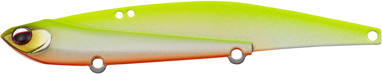
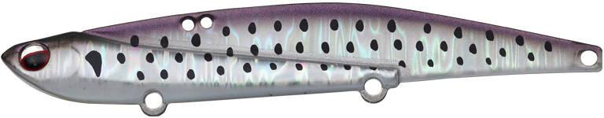
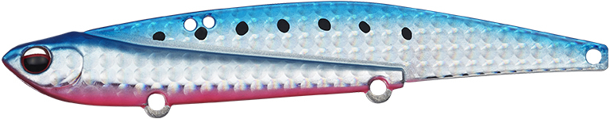
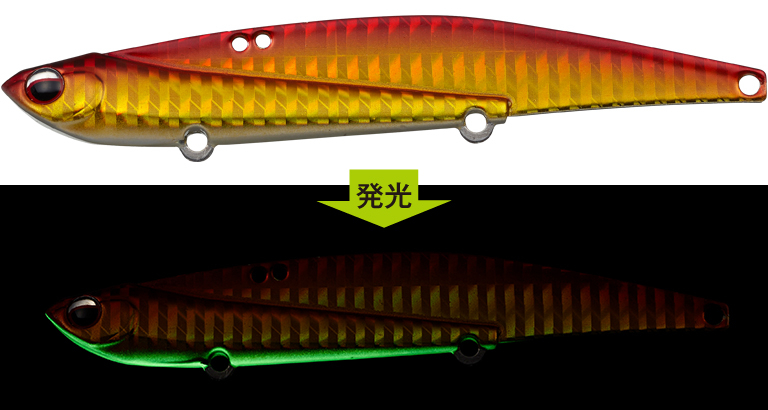
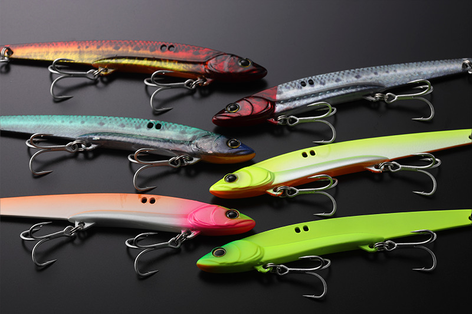
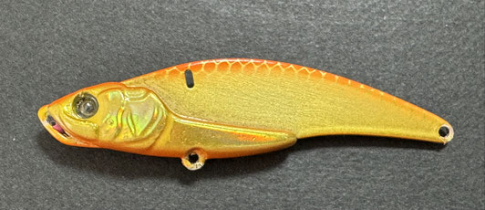

アイアンマービー109
（IronMarvie109）
アイアンマービー109（IronMarvie109）はEVERGREEN（エバーグリーン）の鉄板バイブレーションです。
小沼正弥完全監修の、渋い状況でも釣れるロングボディ鉄板バイブ。アクションが変化する前後2つのラインアイを設定し、10cm以上のイワシやコノシロなどボリュームのあるベイトパターンや、潮通しの良いオープンエリアでの回遊狙いで威力を発揮するのが最大の魅力です。

画像出典:エバーグリーン公式HP
スペック
- メーカー
- EVERGREEN（エバーグリーン）
- タイプ
- 鉄板バイブレーション（シンキング）
- 全長
- 109mm
- 自重
- 37.0g
- フック
- #6（フロント・センター・リアの3フック）
- リング
- #3（フックアイ）
- ターゲット
- シーバス・青物
- 価格
- 1,450円（税抜）
▼今すぐチェック

アイアンマービー109の特徴
ロングボディのアピール力と、2つのラインアイで高活性から渋い状況まで釣り切る鉄板バイブ
-
アクションが変化する前後2つのラインアイ
リアアイは高活性時に効く標準ポジションで、ミディアムリトリーブでタイトウォブリングを発生。フロントアイは渋い状況向けの食わせ特化ポジションで、スローではふらつきを伴うI字スイム、ファストでは超タイトウォブリングの高速スイムになる。
-
水平に近いスイム姿勢で見切られにくく、巻き心地も軽い
どちらのラインアイでもベイトフィッシュライクな水平に近い姿勢で泳ぐよう調整。見切られにくさに加えて巻き心地も軽く、時合いが読めない状況で長時間巻き続けやすい。
-
極薄0.8mmステンレス＆3フックシステム
極薄かつ高強度な0.8mmステンレスプレートでキレのあるアクションを実現。外側に張り出したフックアイと掛かりやすくバレにくい3フックシステムで、掛けてからのバラシも軽減する。
アイアンマービー109の使い方
基本はただ巻き。朝夕マズメなど魚の活性が高い時は、標準のリアアイでミディアムリトリーブし、タイトウォブリングで周囲のやる気のある魚に効率良くアプローチする。
ド日中や人の多いポイントなど渋い状況では、フロントアイに付け替えるのが小沼流。スローリトリーブのI字スイムで食わせるか、ファストリトリーブの超タイトウォブリングで反射食いを誘うかを使い分けます。
アイアンマービー109の得意な状況
10cm以上のイワシやコノシロなど、ボリュームのあるベイトが捕食されている状況が最大の出番。
潮通しの良い堤防やオープンエリアで、回遊してくるシーバスや青物を待ち構えて巻き続けたい場面で選びたい1本です。
ワンポイント
標準装備は刺さり重視の中軸トレブルフック#6なので、大型魚とのパワーファイトが想定される場合は太軸トレブルフックへの交換がメーカー推奨です。
同じ場所で反応が途絶えたら、ラインアイの位置を変えるだけでアクションが変わるので、ルアーを替える前に試してみましょう。
アイアンマービーシリーズの使い分け
| モデル | 全長／自重 | 得意な場面 |
|---|---|---|
| 40 | 40mm／5.5g | 極小ベイトに合わせる食わせのマイクロ鉄板 |
| 55 | 55mm／13.5g | 釣れ頃サイズ×飛距離のスモール鉄板バイブ |
| オリジナル | 75mm／25g | シリーズの基準となるオリジナルサイズ |
| 109 | 109mm／37g | ロングボディ・大きめのベイトとオープンエリアの回遊狙い（本記事のモデル） |
アイアンマービーは40・55・オリジナル・109のサイズ展開。ベイトのサイズでサイズを選び、109はシリーズで最もボリュームのあるロングボディモデルだ。
オススメカラー
アイアンマービー109は全16色展開。シーバス・青物狙いでオススメのカラーを厳選して紹介します。

#602 ビッグバイトチャート視認性の高いチャート系。濁りや朝夕マズメにシルエットを強く出したい時に。

#809 フラッシュコノシロコノシロパターンにマッチするフラッシング系。大きめのベイトが入った時の基準カラーに。

#822 ブルピンイワシイワシパターンの定番ブルピン。青物の回遊狙いにも使いやすい。

#841 アカキングローベリーアカキンに腹部グローをプラス。濁りやローライト時のアピールに。
画像出典:エバーグリーン公式HP
アイアンマービー109に似ているルアー
-

ビッグバッカー107 ジャッカル 詳細はこちら＞全長107mm・自重27gのロングメタルバイブ。アクションが変わる前後のアイと3フックシステムを持ち、ロングボディでベイトに合わせる考え方がアイアンマービー109と共通する。
-

ラナケラ57 アイマ 詳細はこちら＞人気の鉄板バイブレーション。コンパクトなシルエットで、ベイトが小さい時はラナケラ、大きい時はアイアンマービー109と使い分けたい。